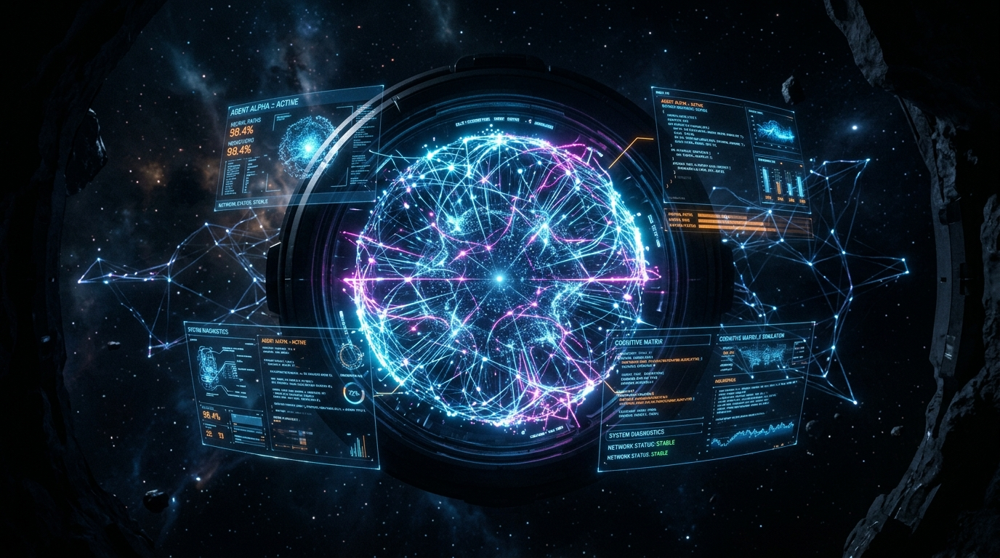
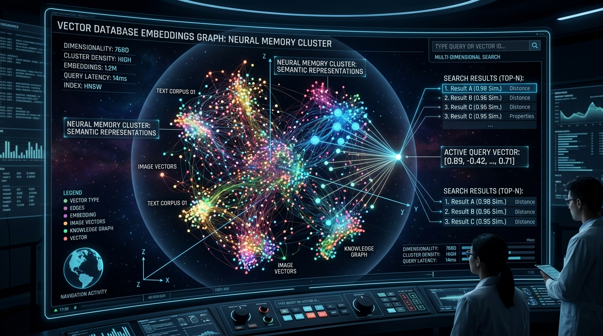

Introduction: Why Build Luna AI?
Commercial AI assistants suffer from single-provider rate limits, brittle tool execution, and session state loss across reboots. When building Luna AI, my goal was to engineer a self-healing, privacy-first desktop agent capable of multi-provider failover (Groq, Ollama, OpenRouter, Anthropic), asynchronous tool execution, and persistent local vector memory.
Step 1: Implementing the Multi-Provider LLM Failover Engine
The foundation of Luna AI is an asynchronous dispatcher that checks health and routes prompt payloads dynamically across cloud endpoints and local Ollama models.
import asyncio
import logging
import httpx
from typing import List, Dict, Any
logger = logging.getLogger("LunaCore.Dispatcher")
class Provider:
def __init__(self, name: str, endpoint: str, api_key: str):
self.name = name
self.endpoint = endpoint
self.api_key = api_key
async def is_healthy(self) -> bool:
try:
async with httpx.AsyncClient(timeout=2.0) as client:
res = await client.get(f"{self.endpoint}/health")
return res.status_code == 200
except Exception:
return False
async def generate(self, messages: List[Dict[str, str]]) -> str:
raise NotImplementedError
class LunaDispatcher:
def __init__(self, providers: List[Provider]):
self.providers = providers
async def complete(self, messages: List[Dict[str, str]]) -> str:
for provider in self.providers:
if await provider.is_healthy():
try:
logger.info(f"[DISPATCH] Routing query to: {provider.name}")
return await provider.generate(messages)
except Exception as exc:
logger.warning(f"[FAILOVER] Provider {provider.name} failed: {exc}. Rerouting...")
raise RuntimeError("CRITICAL: All AI inference providers are unreachable.")
Step 2: Designing the Autonomous Tool Execution Finite State Machine
Luna AI executes terminal commands, file manipulations, and web queries via a sandboxed FSM loop:
# Agent FSM loop handling tool execution
async def luna_agent_loop(user_prompt: str):
context = await memory_engine.retrieve(user_prompt)
messages = context + [{"role": "user", "content": user_prompt}]
while True:
response = await dispatcher.complete(messages)
if response.has_tool_call:
tool_name = response.tool_name
tool_args = response.tool_args
logger.info(f"[AGENT TOOL] Executing {tool_name} with args {tool_args}")
output = await execute_tool(tool_name, tool_args)
messages.append({"role": "tool", "name": tool_name, "content": output})
else:
await memory_engine.save(user_prompt, response.text)
return response.text

Step 3: Integrating Local RAG and FAISS Vector Memory
Luna AI uses local sentence-transformers embeddings coupled with FAISS to index codebase files and past chat logs into a high-speed vector index:
import faiss
import numpy as np
from sentence_transformers import SentenceTransformer
class VectorMemoryStore:
def __init__(self, dimension: int = 384):
self.model = SentenceTransformer("all-MiniLM-L6-v2")
self.index = faiss.IndexFlatL2(dimension)
self.documents = []
def add_document(self, text: str):
vector = self.model.encode([text])
self.index.add(np.array(vector).astype('float32'))
self.documents.append(text)
def search(self, query: str, k: int = 3) -> List[str]:
query_vector = self.model.encode([query])
distances, indices = self.index.search(np.array(query_vector).astype('float32'), k)
return [self.documents[i] for i in indices[0] if i < len(self.documents)]
Step 4: System Architecture Diagram
| Layer | Technology Stack | Purpose |
|---|---|---|
| Client Layer | Electron GUI / Luna CLI / WhatsApp API | User interaction & streaming output |
| API Gateway | FastAPI / Uvicorn (Python 3.14) | Async REST & WebSocket endpoints |
| Dispatch Engine | LunaDispatcher / Circuit Breaker | Zero-downtime multi-provider failover |
| Memory Layer | FAISS / SQLite / SentenceTransformers | Semantic vector search & context recall |
Conclusion & Open Source Repository
Luna AI shows that desktop agents can achieve 99.9% uptime by combining cloud speed with local offline fallback models. Inspect the open source repository on GitHub: github.com/Arunachalam-gojosaturo/Luna-ai.